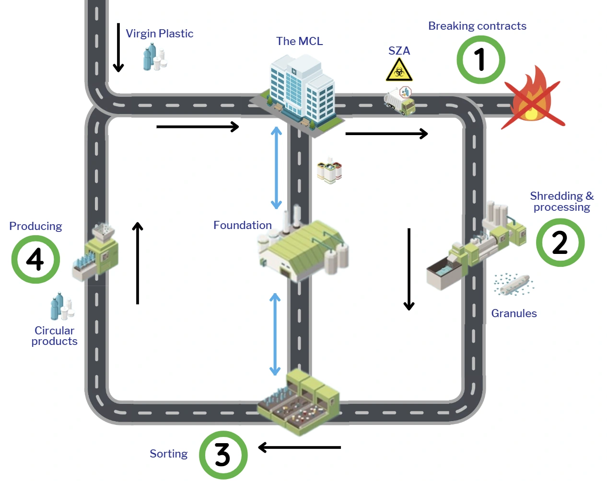
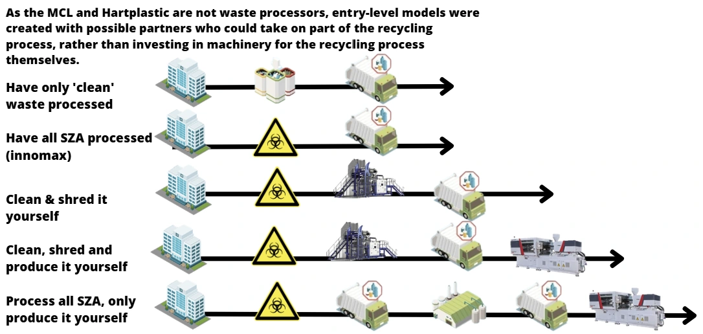
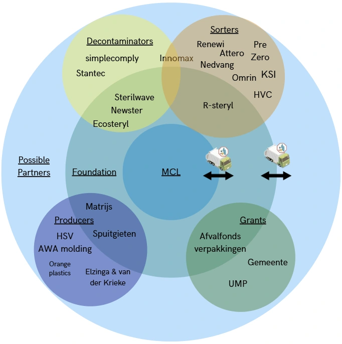
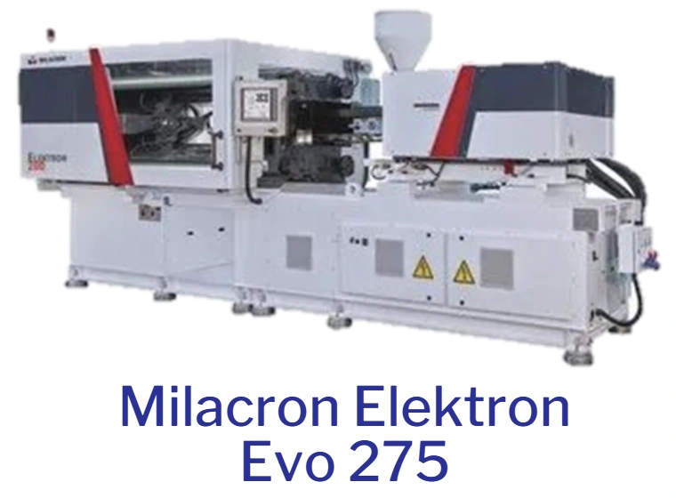
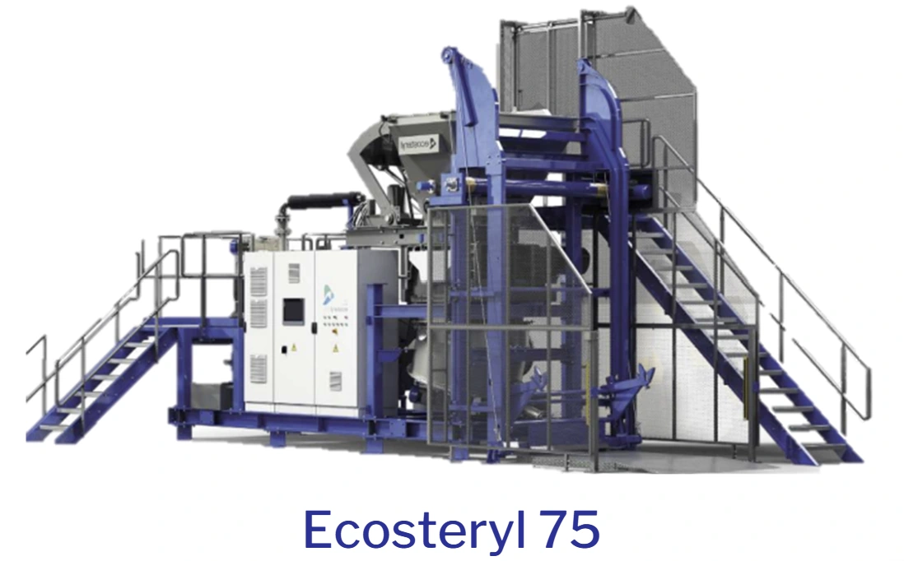
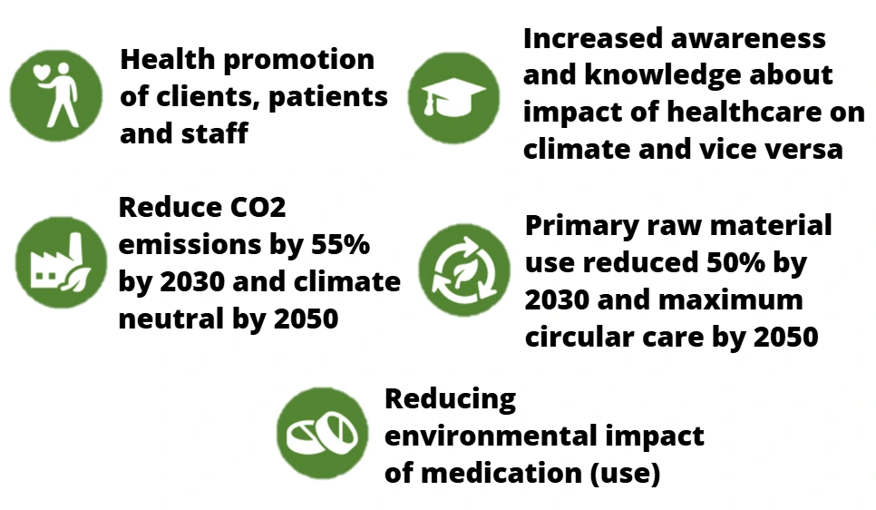

03 / Circular systems
Circular Healthcare
A roadmap for turning hospital plastic waste into circular products through better sorting, specialist partners and a shared recycling foundation.

From mixed waste to usable material
The onepager describes a system in which the MCL does not separate clean and contaminated plastic: it is classified as SZA and sent for incineration. The hospital generates around 146 tonnes of plastic waste each year. Existing waste contracts, including the IFZ arrangement, also make a change difficult to introduce quickly.
Recycling requires more than collecting the material. Contaminated plastic has to be cleaned, and the resulting sterile but mixed granules must be sorted into single-material streams before they can be used again. Only a small number of Dutch companies can clean this waste, while large facilities such as KSI are needed to sort it at scale.

Start with partners, build capability over time
Because the MCL and Hartplastic are not waste processors, the roadmap proposes entry-level partnerships instead of requiring them to buy and operate every recycling machine themselves. The options build from processing only clean waste, through processing all SZA with a partner such as Innomax, to taking on cleaning and shredding, adding production, or processing all SZA and making products in-house.
These are alternative steps toward greater involvement, not claims that each stage is already operating. They make it possible to match investment and responsibility to the partners and capabilities available.

A foundation in Friesland
The proposed foundation would bring several stages together centrally in Friesland: shredding, cleaning and making new products. Fewer separate hand-offs could reduce transport while giving the partners a shared place to turn recovered material into useful products.
The stakeholder map brings together the MCL, the foundation, possible partners, decontaminators, sorters, producers and grant providers. The onepager also proposes equipment including an Ecoteryl 75 and a Milacron Elektron Evo 275 injection-moulding machine with a mould. These are part of the proposal, not equipment confirmed as purchased or installed.



Policy goals and expected impact
The MCL and Hartplastic aim to reuse and separate as much plastic as possible, in line with Green Deal 3.0 ambitions. The onepager sets out goals for 2030 and 2050: improve health and climate awareness among clients, patients and staff; reduce CO₂ emissions by 55% by 2030 and reach climate neutrality by 2050; halve primary raw-material use by 2030; and work toward maximum circular care by 2050. It also calls for reducing the environmental impact of medication use.
The project presents potential benefits rather than measured results: circular products could reduce waste costs by 24.8%; circular production could emit 42.5% less than producing new plastic; and recycling rather than incineration could avoid 2.2 kg of CO₂ per kilogram of plastic. The onepager also cites €1.25 per kilogram as the waste cost if the current contract is broken.
